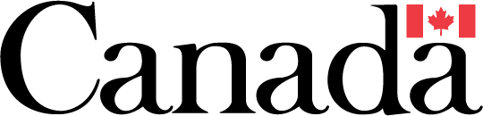
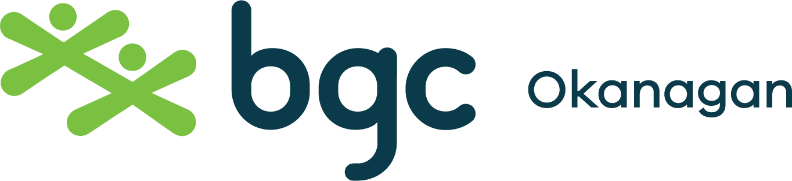
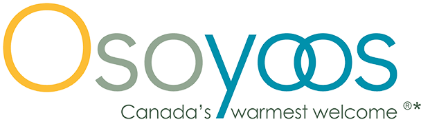
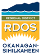

Our Impact
Every dollar invested in Desert Sun goes directly to strengthening the South Okanagan. Here is what we accomplished together in 2024 / 2025.
2024 / 2025 at a Glance
From crisis shelter to seniors transportation, Desert Sun delivered 26 programs across the South Okanagan this year — all free to those who need them most.
A Year of Growth & Transformation

“This year has been one of growth and transformation, as we navigated the evolving needs of those we service amidst a changing landscape. Our commitment to providing accessible, compassionate, and effective support has never been stronger. Through innovative programs, strategic partnerships, and the unwavering support of our donors and volunteers, we have been able to expand our reach and deepen our impact. Together, we continue to build a community where every individual can thrive.”
Marieze Tarr, Executive Director — Desert Sun Counselling and Resource Centre SocietyYear in Review
A snapshot of the milestones, new programs, and community achievements that defined this past year.
Social Meals Launched — New program offering weekly nutritious meals and social connection for seniors in Osoyoos, Oliver, and Okanagan Falls, funded by United Way.
$62,000 raised through our virtual Empty Bowls and Baskets Fundraiser, directly supporting free programs in the South Okanagan.
Community Lift Program Launched — Wheelchair-accessible transportation for seniors to medical appointments and errands in Penticton, Kelowna, and locally.
Community Connector Role Established — A new position bridging the gap for seniors not linked to primary care, connecting them to health and community services.
Violence Is Preventable — School-based program piloted in elementary and high schools, teaching children and youth about healthy relationships and domestic violence prevention.
Social Enterprise — Secured McConnell Foundation funding to launch a food rescue enterprise reducing farm waste and improving food security in local communities.
AUD Awareness Campaign — Partnered with CAUDS to reduce stigma around Alcohol Use Disorder through community workshops, Festival of the Grape, and public screening of the documentary SMASHED.
School’s Out Program — Secured funding for after-school programs at both Osoyoos Elementary and Oliver Elementary, expanding youth support services.
Advocacy Success — Meetings with the Attorney General and Lieutenant Governor advanced Desert Sun’s policy voice on domestic violence and community health.
Detailed Program Statistics
Every number below represents a real person in the South Okanagan who received free, confidential support from Desert Sun in 2024 / 2025.
Community Outreach & Advocacy
Crisis & Safety
Counselling
Early Childhood & Parenting Support
Seniors Support
Youth & Prevention Programs
Thank You to Our Funders & Partners
Desert Sun’s programs exist because of the generosity of our funders, donors, and community partners. Without your support, we would not be able to help all of the people reached this year.









We also thank the many individual donors, businesses, and volunteers whose contributions — large and small — make our work possible every day.
Annual Report 2024 / 2025
Read the full 2024 / 2025 Annual Report including our complete financial statements, program highlights, staff and board listing, and a message from our Executive Director.
Be part of next year’s impact
Every donation, volunteer hour, and act of advocacy helps Desert Sun do more for the South Okanagan. Join us in building a stronger community.